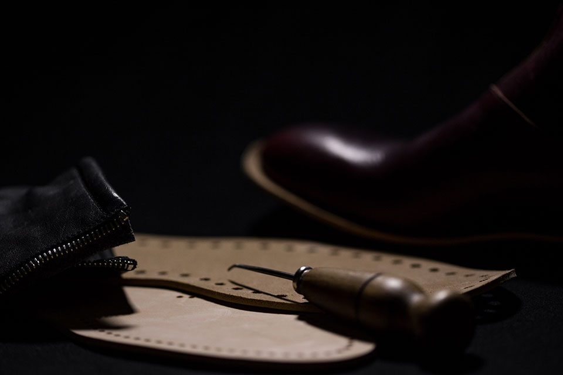
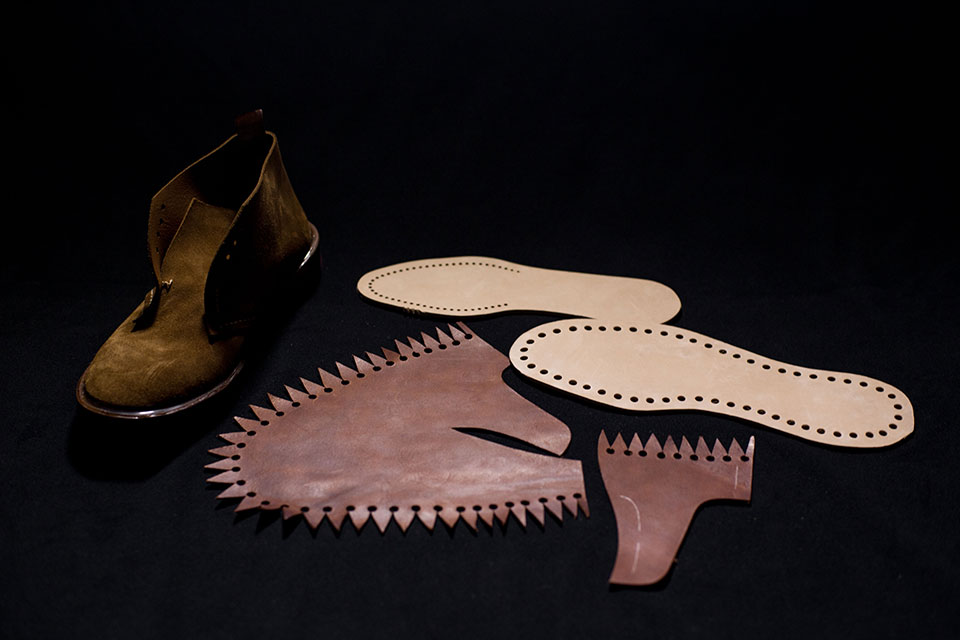
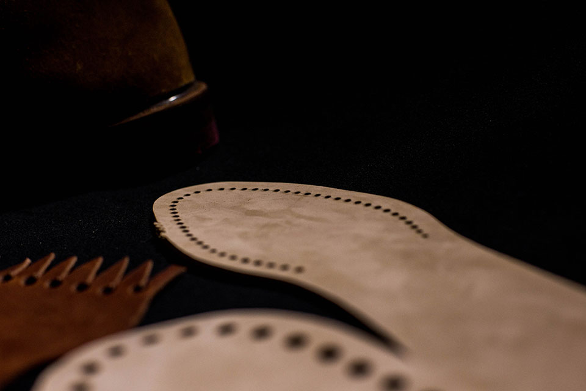
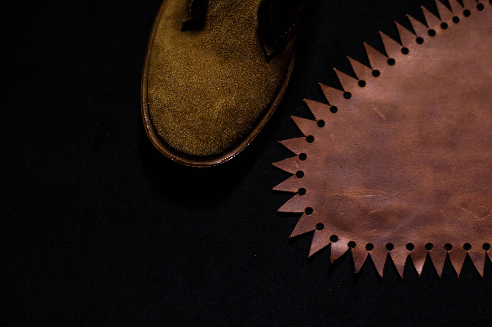

Measponte è un progetto calato nel presente, in sintonia col mondo, ma definito dal carattere italiano, che si nutre di tradizione artigianale. Estetica e tecnica si compenetrano in una formula precisa: un distillato di estro, comfort e design della calzatura, che fa capo alla ricerca pura e all’innovazione.
The good taste is the expression of stylistic details and
intelligent craftsmanship. See things in a
different way to search for beauty.
Il gioco continuo ed elegantemente controllato tra qualità materiale e cifra stilistica, nasce dall’esigenza di preservare un proprio linguaggio e una propria alterità; lontano dalla meccanizzazione dei processi industriali e dai diktat della moda.
Un registro espressivo che contempla la calzatura come entità funzionale dall’allure sofisticata, per rendere possibile la messa in particolare di inedite combinazioni e lavorazioni. L’idea dell’unicità dello stile oltre il tempo, insieme all’artigianalità intesa come manipolazione della forma, restituisce al designer l’intensità del rapporto con la calzatura. Linearità e purismo.
Measponte è un progetto calato nel presente, in sintonia col mondo, ma definito dal carattere italiano, che si nutre di tradizione artigianale. Estetica e tecnica si compenetrano in una formula precisa: un distillato di estro, comfort e design della calzatura, che fa capo alla ricerca pura e all’innovazione.
